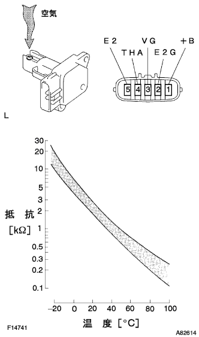

インテークエアフロー メータSUB-ASSY 単体点検 |
| 1. インテークエアフロー メータSUB-ASSY |
エアフロメータ出力電圧点検
1(+B)端子にバッテリプラス、2(E2G)端子にバッテリマイナスを接続する。
SST(トヨタエレクトリカルテスター)を使用して、3(VG)端子にテスターのプラス、2(E2G)端子にテスターのマイナスを接続する。
|  |
エアフロメータに空気を吹き込んだとき、電圧が変化することを確認する。
吸気温センサ抵抗点検
SST(トヨタエレクトリカルテスター）)を使用して、4(THA)←→5(E2)端子間の抵抗を測定する。
| 端子間 | 抵抗 | 温度 |
|---|---|---|
| THA←→E2 | 13.6-18.4ｋΩ | -20°C |
| THA←→E2 | 2.21-2.69ｋΩ | 20°C |
| THA←→E2 | 0.49-0.67ｋΩ | 60°C |